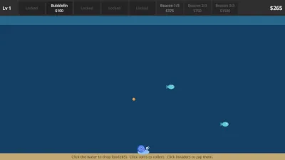
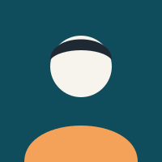

Make my own videogame.
Currently coding an "Insane Aquarium" successor in Godot.

More about Godot.Andrew Pirooz

I'm an Information Technology and Applied Systems student at Vancouver Island University. I like taking things apart to see how they work — servers, networks, and the occasional game save file — and then putting them back together a little better than before.
Three things I want to accomplish in my career.
Currently coding an "Insane Aquarium" successor in Godot.

More about Godot.Work towards CompTIA Security+ so I can move into defensive security and incident response.
About Security+I think a quiet social space without all the algorithmic white noise would be beneficial for my mental health.
How to contribute